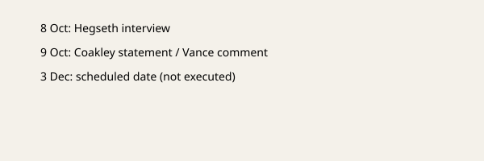

Fort Hood · Execution · 10 October 2026
Criticism of the planned Hasan livestream continued; Vance said he would not watch

What is agreed across desks
Nidal Malik Hasan was convicted in a 2009 court-martial of killing 13 people and wounding 32 others at Fort Hood. A death sentence was imposed. On or about 8 October, Defense Secretary Pete Hegseth stated in an interview that the scheduled 3 December firing-squad execution would be public and livestreamed. The Pentagon confirmed the livestream intent. On 9 October, Archbishop Paul Coakley, president of the U.S. Conference of Catholic Bishops, called the plan barbaric. Vice President JD Vance said he did not know whether the livestream would actually occur and that he would not watch it if it did. President Trump said a determination about the stream would still be made.
What is only a quote
Hegseth’s remarks about deterrence and public understanding are interview statements, not a published protocol with technical details or a court order. Criticism from religious leaders and human-rights advocates is commentary. No report in the surveyed coverage contains a docket entry showing a stay has been granted or denied.
Mechanism and history
Military executions in the United States are rare. The Uniform Code of Military Justice provides for capital punishment in certain cases; the method is set by regulation. Public viewing of executions has historical precedent in some state systems but has not been a modern federal or military practice. Livestreaming would be a new technical and legal step. International human-rights bodies have long treated public executions as raising concerns under prohibitions on cruel, inhuman, or degrading treatment. Whether those norms bind the U.S. military in this instance is a legal question not resolved in the news reports.
What the story is not
It is not a completed execution. It is not proof that a livestream will or will not occur. It is not a re-trial of the 2009 facts. The photograph is the Pentagon building, not Fort Hood.

Source articles and scores
| Outlet | Headline | T | N | C |
|---|---|---|---|---|
| CNN | Hegseth gets backlash over livestreaming a firing squad execution | 90 | -12 | 78 |
| Washington Post | Live-streaming Hasan execution is ‘barbaric’, top U.S. Catholic bishop says | 92 | -6 | 88 |
| BBC | Who is Nidal Hasan? What to know about US plans to livestream an execution online | 93 | 0 | 94 |